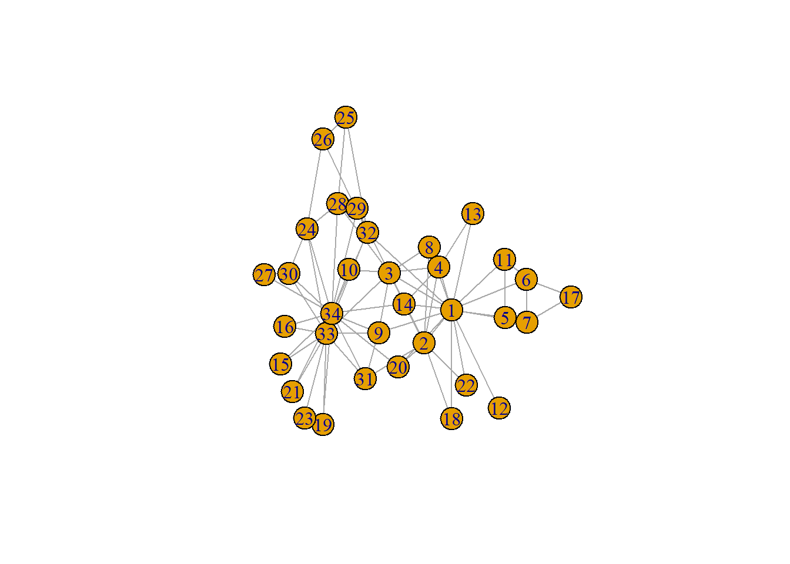
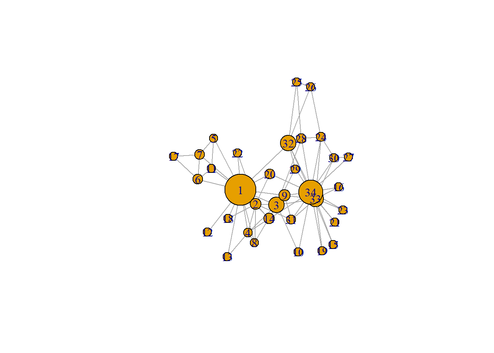
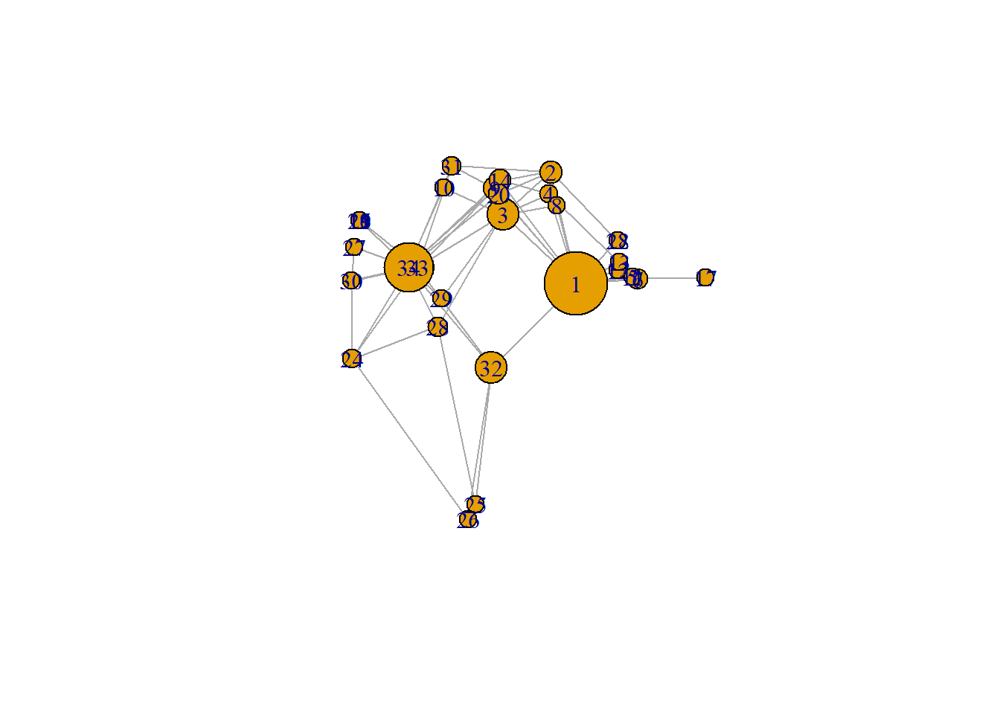
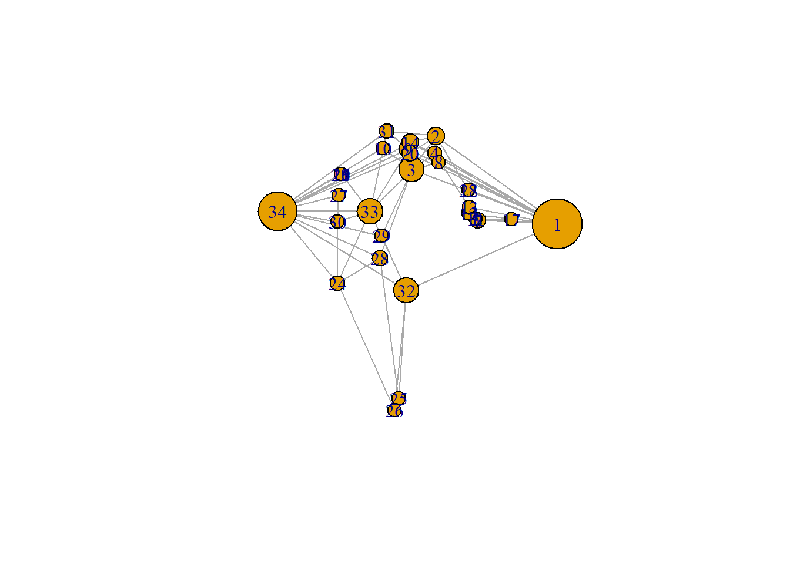

In the workshop we did the following:
A few student presentations on RQ and data
Intro to network visualization
Intro to web scraping
Working with our own data, making first few plots
Based on the tutorial in @SNASS chapter 9
# loading the data - Zachary's karate club
require(igraph)## Loading required package: igraph## Warning: package 'igraph' was built under R version 4.5.3##
## Attaching package: 'igraph'## The following objects are masked from 'package:stats':
##
## decompose, spectrum## The following object is masked from 'package:base':
##
## uniong <- make_graph("Zachary")
plot(g)
# 'g' is een igraph object
# adjacency matrix van maken
gmat <- as_adjacency_matrix(g, type = "both", sparse = FALSE)
gmat## [,1] [,2] [,3] [,4] [,5] [,6] [,7] [,8] [,9] [,10] [,11] [,12] [,13]
## [1,] 0 1 1 1 1 1 1 1 1 0 1 1 1
## [2,] 1 0 1 1 0 0 0 1 0 0 0 0 0
## [3,] 1 1 0 1 0 0 0 1 1 1 0 0 0
## [4,] 1 1 1 0 0 0 0 1 0 0 0 0 1
## [5,] 1 0 0 0 0 0 1 0 0 0 1 0 0
## [6,] 1 0 0 0 0 0 1 0 0 0 1 0 0
## [7,] 1 0 0 0 1 1 0 0 0 0 0 0 0
## [8,] 1 1 1 1 0 0 0 0 0 0 0 0 0
## [9,] 1 0 1 0 0 0 0 0 0 0 0 0 0
## [10,] 0 0 1 0 0 0 0 0 0 0 0 0 0
## [11,] 1 0 0 0 1 1 0 0 0 0 0 0 0
## [12,] 1 0 0 0 0 0 0 0 0 0 0 0 0
## [13,] 1 0 0 1 0 0 0 0 0 0 0 0 0
## [14,] 1 1 1 1 0 0 0 0 0 0 0 0 0
## [15,] 0 0 0 0 0 0 0 0 0 0 0 0 0
## [16,] 0 0 0 0 0 0 0 0 0 0 0 0 0
## [17,] 0 0 0 0 0 1 1 0 0 0 0 0 0
## [18,] 1 1 0 0 0 0 0 0 0 0 0 0 0
## [19,] 0 0 0 0 0 0 0 0 0 0 0 0 0
## [20,] 1 1 0 0 0 0 0 0 0 0 0 0 0
## [21,] 0 0 0 0 0 0 0 0 0 0 0 0 0
## [22,] 1 1 0 0 0 0 0 0 0 0 0 0 0
## [23,] 0 0 0 0 0 0 0 0 0 0 0 0 0
## [24,] 0 0 0 0 0 0 0 0 0 0 0 0 0
## [25,] 0 0 0 0 0 0 0 0 0 0 0 0 0
## [26,] 0 0 0 0 0 0 0 0 0 0 0 0 0
## [27,] 0 0 0 0 0 0 0 0 0 0 0 0 0
## [28,] 0 0 1 0 0 0 0 0 0 0 0 0 0
## [29,] 0 0 1 0 0 0 0 0 0 0 0 0 0
## [30,] 0 0 0 0 0 0 0 0 0 0 0 0 0
## [31,] 0 1 0 0 0 0 0 0 1 0 0 0 0
## [32,] 1 0 0 0 0 0 0 0 0 0 0 0 0
## [33,] 0 0 1 0 0 0 0 0 1 0 0 0 0
## [34,] 0 0 0 0 0 0 0 0 1 1 0 0 0
## [,14] [,15] [,16] [,17] [,18] [,19] [,20] [,21] [,22] [,23] [,24] [,25]
## [1,] 1 0 0 0 1 0 1 0 1 0 0 0
## [2,] 1 0 0 0 1 0 1 0 1 0 0 0
## [3,] 1 0 0 0 0 0 0 0 0 0 0 0
## [4,] 1 0 0 0 0 0 0 0 0 0 0 0
## [5,] 0 0 0 0 0 0 0 0 0 0 0 0
## [6,] 0 0 0 1 0 0 0 0 0 0 0 0
## [7,] 0 0 0 1 0 0 0 0 0 0 0 0
## [8,] 0 0 0 0 0 0 0 0 0 0 0 0
## [9,] 0 0 0 0 0 0 0 0 0 0 0 0
## [10,] 0 0 0 0 0 0 0 0 0 0 0 0
## [11,] 0 0 0 0 0 0 0 0 0 0 0 0
## [12,] 0 0 0 0 0 0 0 0 0 0 0 0
## [13,] 0 0 0 0 0 0 0 0 0 0 0 0
## [14,] 0 0 0 0 0 0 0 0 0 0 0 0
## [15,] 0 0 0 0 0 0 0 0 0 0 0 0
## [16,] 0 0 0 0 0 0 0 0 0 0 0 0
## [17,] 0 0 0 0 0 0 0 0 0 0 0 0
## [18,] 0 0 0 0 0 0 0 0 0 0 0 0
## [19,] 0 0 0 0 0 0 0 0 0 0 0 0
## [20,] 0 0 0 0 0 0 0 0 0 0 0 0
## [21,] 0 0 0 0 0 0 0 0 0 0 0 0
## [22,] 0 0 0 0 0 0 0 0 0 0 0 0
## [23,] 0 0 0 0 0 0 0 0 0 0 0 0
## [24,] 0 0 0 0 0 0 0 0 0 0 0 0
## [25,] 0 0 0 0 0 0 0 0 0 0 0 0
## [26,] 0 0 0 0 0 0 0 0 0 0 1 1
## [27,] 0 0 0 0 0 0 0 0 0 0 0 0
## [28,] 0 0 0 0 0 0 0 0 0 0 1 1
## [29,] 0 0 0 0 0 0 0 0 0 0 0 0
## [30,] 0 0 0 0 0 0 0 0 0 0 1 0
## [31,] 0 0 0 0 0 0 0 0 0 0 0 0
## [32,] 0 0 0 0 0 0 0 0 0 0 0 1
## [33,] 0 1 1 0 0 1 0 1 0 1 1 0
## [34,] 1 1 1 0 0 1 1 1 0 1 1 0
## [,26] [,27] [,28] [,29] [,30] [,31] [,32] [,33] [,34]
## [1,] 0 0 0 0 0 0 1 0 0
## [2,] 0 0 0 0 0 1 0 0 0
## [3,] 0 0 1 1 0 0 0 1 0
## [4,] 0 0 0 0 0 0 0 0 0
## [5,] 0 0 0 0 0 0 0 0 0
## [6,] 0 0 0 0 0 0 0 0 0
## [7,] 0 0 0 0 0 0 0 0 0
## [8,] 0 0 0 0 0 0 0 0 0
## [9,] 0 0 0 0 0 1 0 1 1
## [10,] 0 0 0 0 0 0 0 0 1
## [11,] 0 0 0 0 0 0 0 0 0
## [12,] 0 0 0 0 0 0 0 0 0
## [13,] 0 0 0 0 0 0 0 0 0
## [14,] 0 0 0 0 0 0 0 0 1
## [15,] 0 0 0 0 0 0 0 1 1
## [16,] 0 0 0 0 0 0 0 1 1
## [17,] 0 0 0 0 0 0 0 0 0
## [18,] 0 0 0 0 0 0 0 0 0
## [19,] 0 0 0 0 0 0 0 1 1
## [20,] 0 0 0 0 0 0 0 0 1
## [21,] 0 0 0 0 0 0 0 1 1
## [22,] 0 0 0 0 0 0 0 0 0
## [23,] 0 0 0 0 0 0 0 1 1
## [24,] 1 0 1 0 1 0 0 1 1
## [25,] 1 0 1 0 0 0 1 0 0
## [26,] 0 0 0 0 0 0 1 0 0
## [27,] 0 0 0 0 1 0 0 0 1
## [28,] 0 0 0 0 0 0 0 0 1
## [29,] 0 0 0 0 0 0 1 0 1
## [30,] 0 1 0 0 0 0 0 1 1
## [31,] 0 0 0 0 0 0 0 1 1
## [32,] 1 0 0 1 0 0 0 1 1
## [33,] 0 0 0 0 1 1 1 0 1
## [34,] 0 1 1 1 1 1 1 1 0isSymmetric(gmat) # symmetrisch, dus undirected!## [1] TRUE# size
# degree
# TRANSITVITY
# hoeveel gesloten driehoekjes van alle mogelijke driehoekjes?
# be aware that directed graphs are considered as undirected. but g is undirected.
igraph::transitivity(g, type = c("localundirected"), isolates = c("NaN", "zero"))## [1] 0.1500000 0.3333333 0.2444444 0.6666667 0.6666667 0.5000000 0.5000000
## [8] 1.0000000 0.5000000 0.0000000 0.6666667 NaN 1.0000000 0.6000000
## [15] 1.0000000 1.0000000 1.0000000 1.0000000 1.0000000 0.3333333 1.0000000
## [22] 1.0000000 1.0000000 0.4000000 0.3333333 0.3333333 1.0000000 0.1666667
## [29] 0.3333333 0.6666667 0.5000000 0.2000000 0.1969697 0.1102941# BETWEENNESS
# hoe vaak zit ego op de kortste paden tussen 2 actoren
igraph::betweenness(g, directed = FALSE)## [1] 231.0714286 28.4785714 75.8507937 6.2880952 0.3333333 15.8333333
## [7] 15.8333333 0.0000000 29.5293651 0.4476190 0.3333333 0.0000000
## [13] 0.0000000 24.2158730 0.0000000 0.0000000 0.0000000 0.0000000
## [19] 0.0000000 17.1468254 0.0000000 0.0000000 0.0000000 9.3000000
## [25] 1.1666667 2.0277778 0.0000000 11.7920635 0.9476190 1.5428571
## [31] 7.6095238 73.0095238 76.6904762 160.5515873# actor 1, 3 en 34 springen er heel erg uit, maar op het plaatje zie je niet veel verschil tussen 33 en 34. hier kun je mee spelen in het plot; als je betweenness centraal wil stellen, wil je meer nadruk leggen op actoren 1 en 34. bijvoorbeeld: door andere kleuren/intensiteit, grootte of layout obv betweenness
igraph::dyad_census(g)## Warning: `dyad_census()` requires a directed graph.## $mut
## [1] 78
##
## $asym
## [1] 0
##
## $null
## [1] 483igraph::triad_census(g)## Warning in triad_census_impl(graph = graph): Triad census called on an undirected graph. All connections will be treated as mutual.
## Source: misc/motifs.c:1157## [1] 3971 0 1575 0 0 0 0 0 0 0 393 0 0 0 0
## [16] 45# I will use sna because it shows the names of the triads as well.
sna::triad.census(gmat)## 003 012 102 021D 021U 021C 111D 111U 030T 030C 201 120D 120U 120C 210
## [1,] 3971 0 1575 0 0 0 0 0 0 0 393 0 0 0 0
## 300
## [1,] 45unloadNamespace("sna") #I will detach this package again, otherwise it will interfere with all kind of functions from igraph, and my students will hate me for that.
# GLOBAL TRANSITIVITY
igraph::transitivity(g, type = "global")## [1] 0.2556818sna::gtrans(gmat)## [1] 0.2556818triad_g <- data.frame(sna::triad.census(gmat))
transitivity_g <- (3 * triad_g$X300)/(triad_g$X201 + 3 * triad_g$X300)
transitivity_g## [1] 0.2556818We zien nu dat er verschillen zijn in lokale transitiviteit en in betweenness, en er zijn 2 nodes die eruit springen (= met hoge betweenness, lage local transitivity). Maar die twee nodes zijn niet met elkaar verbonden; interessant!
# Let’s make size proportional to betweenness score:
# changing V
V(g)$size = betweenness(g, normalized = T, directed = FALSE) * 60 + 10 #after some trial and error
plot(g, mode = "undirected")
# we willen actor 1 en 34 toch nog wat verder uit elkaar. dit doen we obv een algoritme
set.seed(2345)
l <- layout_with_mds(g) #https://igraph.org/r/doc/layout_with_mds.html
plot(g, layout = l)
l #let us take a look at the coordinates## [,1] [,2]
## [1,] 1.070931935 -0.172458113
## [2,] 0.732844464 0.754023309
## [3,] 0.100582299 0.397693607
## [4,] 0.708246655 0.570205545
## [5,] 1.816293170 -0.120778206
## [6,] 1.881329566 -0.135518854
## [7,] 1.881329566 -0.135518854
## [8,] 0.812606714 0.472619437
## [9,] -0.003769996 0.615513628
## [10,] -0.685680315 0.621065149
## [11,] 1.816293170 -0.120778206
## [12,] 1.621247830 -0.065820692
## [13,] 1.637845123 0.001789972
## [14,] 0.067317230 0.681421148
## [15,] -1.796316404 0.351417630
## [16,] -1.796316404 0.351417630
## [17,] 2.775260452 -0.124317652
## [18,] 1.616210024 0.182510197
## [19,] -1.796316404 0.351417630
## [20,] 0.048362858 0.566654982
## [21,] -1.796316404 0.351417630
## [22,] 1.616210024 0.182510197
## [23,] -1.796316404 0.351417630
## [24,] -1.891240567 -0.799574907
## [25,] -0.258345165 -2.006346563
## [26,] -0.360530857 -2.131642875
## [27,] -1.865177401 0.128596564
## [28,] -0.760226022 -0.529392331
## [29,] -0.710979936 -0.299960128
## [30,] -1.898426916 -0.149398746
## [31,] -0.568691923 0.804189411
## [32,] -0.048136037 -0.870967614
## [33,] -1.023681000 -0.035802363
## [34,] -1.146442924 -0.037605192l[1, 1] <- 4
l[34, 1] <- -3.5
plot(g, layout = l)
# notitie toevoegen om te laten zien dat we hebben 'gemanipuleerd':
plot(g, layout = l, margin = c(0, 0, 0, 0))
legend(x = -2, y = -1.5, c("Note: the position of nodes 1 and 34 have been set by Jochem Tolsma \n for visualisation purposes only and do not reflect network properties"),bty = "n", cex = 0.8)
# start with clean workspace
rm(list = ls())
# install.packages('data.table')
library(data.table) # mainly for faster data handling##
## Attaching package: 'data.table'## The following objects are masked from 'package:lubridate':
##
## hour, isoweek, mday, minute, month, quarter, second, wday, week,
## yday, year## The following objects are masked from 'package:dplyr':
##
## between, first, last## The following object is masked from 'package:purrr':
##
## transposelibrary(tidyverse) # I assume you already installed this one!
# install.packages('httr') # we don't need this for now require(httr)
# install.packages("xml2")
require(xml2)## Loading required package: xml2## Warning: package 'xml2' was built under R version 4.5.3# install.packages("rvest")
require(rvest)## Loading required package: rvest## Warning: package 'rvest' was built under R version 4.5.3##
## Attaching package: 'rvest'## The following object is masked from 'package:readr':
##
## guess_encoding# install.packages("devtools")
require(devtools)## Loading required package: devtools## Warning: package 'devtools' was built under R version 4.5.3## Loading required package: usethis## Warning: package 'usethis' was built under R version 4.5.3# Note we're doing something different here. We're installing a *latest* version directly from
# GitHub This is because the released version of this packages contains some errors!
# devtools::install_github("jkeirstead/scholar")
require(scholar)## Loading required package: scholarurl <- "https://nos.nl/zoeken?q=jochem+tolsma&page=1"
nos <- read_html(url)
nos## {html_document}
## <html data-theme="light" lang="nl">
## [1] <head>\n<meta http-equiv="Content-Type" content="text/html; charset=UTF-8 ...
## [2] <body>\n<div id="__next">\n<nav data-tracking="nestType1=header" aria-lab ...lijst <- nos %>% html_elements("main") %>%
html_elements("ul") %>%
html_elements("li")
lijst[1] %>% html_children %>% html_attr(name="href") # nu hebben we de titels van de artikelen## [1] "/artikel/2448644-camperbewoners-ontmoeten-elkaar-dezelfde-levensstijl-en-je-leert-van-elkaar"# het kost meestal heel veel tijd om het juiste element te vinden
?rvest## starting httpd help server ... donelijst[1] %>%
html_children %>%
html_children %>%
html_children %>%
html_children %>%
html_children %>%
html_attr(name="datetime")## [1] NA NA
## [3] "2022-10-16T19:36:52+0200"# <time> = de naam van het blokje
# datetime = een attribuut van de data in het blokje
lijst[1] %>% html_element("time") ## {xml_nodeset (1)}
## [1] <time datetime="2022-10-16T19:36:52+0200">zondag 16 oktober 2022, 19:36</ ...lijst[1] %>% html_element("time") %>% html_attr(name="datetime")## [1] "2022-10-16T19:36:52+0200"lijst[1] %>% html_element("time") %>% html_text## [1] "zondag 16 oktober 2022, 19:36"artikel1 <- lijst[1] %>% html_children %>% html_attr(name="href")
url <- paste0("https://nos.nl", artikel1)
url## [1] "https://nos.nl/artikel/2448644-camperbewoners-ontmoeten-elkaar-dezelfde-levensstijl-en-je-leert-van-elkaar"library(RSiena)## Warning: package 'RSiena' was built under R version 4.5.3net <- matrix(sample(0:1, size=100, replace=TRUE), nrow=10, ncol=10)
diag(net) <- 0
net1 <- net2 <- net
beh1 <- sample(1:5, size=10, replace=T)
beh2 <- sample(1:5, size=10, replace=T)
beh <- sienaDependent(as.array(cbind(beh1, beh2)), type= "behavior")
ynet <- array(data = c(net1, net2), dim = c(dim(net1), 2))
ynet <- sienaDependent(ynet)
net <- coDyadCovar(net)
mydata <- sienaDataCreate(beh, ynet)## For dependent variable ynet, in some periods,## there are only increases, or only decreases.## This will be respected in the simulations.## If this is not desired,
## use allowOnly=FALSE when creating the dependent variable.getEffects(mydata)## name effectName include fix test initialValue parm
## 1 ynet basic rate parameter ynet TRUE FALSE FALSE 0.10000 0
## 2 ynet reciprocity TRUE FALSE FALSE 0.00000 0
## 3 beh rate beh period 1 TRUE FALSE FALSE 5.73333 0
## 4 beh beh linear shape TRUE FALSE FALSE 0.03490 0
## 5 beh beh quadratic shape TRUE FALSE FALSE 0.00000 0